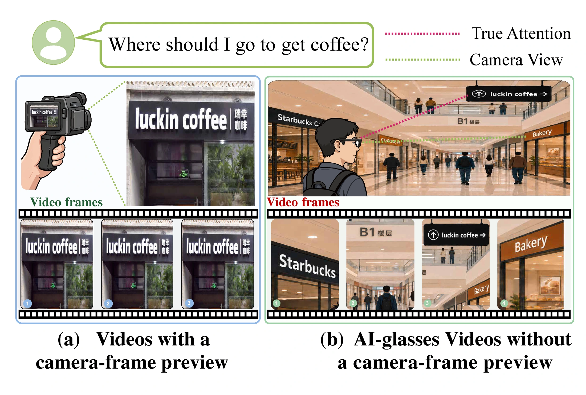
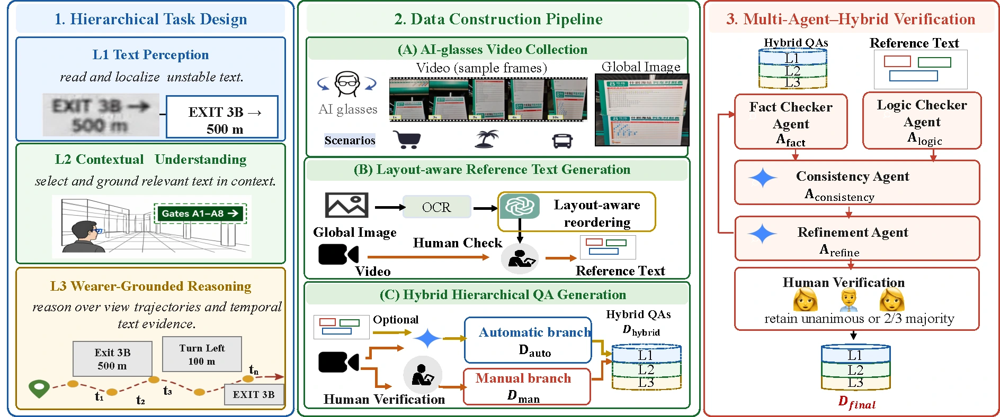
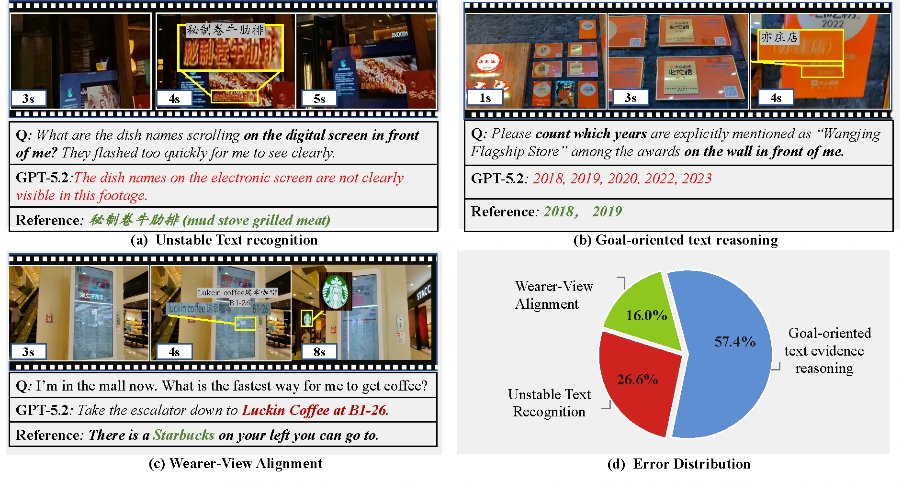

Question
Abstract
1,101AI-glasses videos
15,336Question–answer pairs
13Wearer-centered tasks
20Evaluated MLLMs
Full benchmark reported in the paper. This release contains the test split: 107 videos · 1,391 QA pairs.
The wearer’s perspective
Seeing is not the same as attending.
Without a camera-frame preview, the recorded view does not necessarily reflect the wearer’s attention. Understanding text requires grounding it in position, viewpoint trajectory, and goal.

A three-level diagnostic hierarchy
Perceive. Understand. Reason.
From unstable text perception to wearer-view alignment and goal-oriented reasoning.
Final task IDs: L2.5 = WSI · L3.3 = STS. Click a task for its definition and a paper example.
Inside WearerTextBench
Explore the test set
Browse original questions and verified reference answers. Each video is paired with all 13 tasks.
Video streaming becomes available after the dataset is published on Hugging Face.
Open video file ↗Original-language annotations, not model predictions. Download all test annotations (JSON).
Experimental results
WearerText leaderboard
All 20 models from the latest manuscript. VerEval scores on a 0–100 scale; higher is better.
VerEval = 0.9 × Consistency + 0.1 × Logic Fact is an intermediate diagnostic.
Overall values are taken directly from the paper, not recomputed from rounded task scores. Bold marks column-best scores across all 20 models. Scroll horizontally for every task.
Source: latest LaTeX results table. OCR-only/no-layout diagnostic results are not mixed into this main leaderboard.
Data & construction
Real scenes. Verified evidence.
Shopping, transportation, and tourist scenarios recorded with AI glasses. Multi-agent checks and human verification support the benchmark’s construction.

Release at a glance
| Split | Videos | QA pairs | Availability |
|---|---|---|---|
| Train | 994 | 13,945 | Not in this release |
| Test | 107 | 1,391 | Included |
| Full benchmark | 1,101 | 15,336 | Paper total |
Test videos are stored once and referenced by their QA rows. IDs follow {level}_{task_id}_{suffix}.
Load from Hugging Face
from datasets import load_dataset, Video
ds = load_dataset(
"AI4Reading/WearerTextBench",
split="test",
)
# Read paths without a video decoder.
ds = ds.cast_column("video", Video(decode=False))
print(ds[0]["question"])Available after the prepared dataset repository is uploaded. Dataset card and use policy ↗
Dataset statistics from the paper
Recording scenarios
| Shopping centers | 378 videos |
| Transportation hubs | 412 videos |
| Tourist destinations | 311 videos |
Wearable-video conditions
Viewpoint changes: 72.0%
Briefly visible text: 33.7%
Visible motion blur: 4.8%
Conditions overlap; a video can contain more than one.
Question–answer languages
| Chinese | 67.59% |
| English | 16.40% |
| Mixed Chinese–English | 15.19% |
| Other | 0.82% |
Full-benchmark statistics from the latest appendix, not estimates from the released test split.
Verified-Evidence Evaluation
VerEval
A three-agent protocol that checks factual anchors, logical rigor, and overall consistency.
01
Fact scorer
Numbers, names, places, omissions, and hallucinations.
02
Logic scorer
Question understanding and spatio-temporal reasoning.
03
Consistency scorer
Reviews both scores and reasons with the answer and evidence.
One interface, two backends
Use an OpenAI model or a vLLM-hosted, OpenAI-compatible service. Validate IDs, record reasons, resume completed runs, and report per-task and per-level results.
Main-table protocol. Evidence-based mode uses the question, prediction and verified ground truth, without video frames. The paper uses a local Qwen3-VL-32B judge, temperature 0, a 1,024-token cap and a deterministic seed. Video-frame judging is optional.
Read the evaluation guide →python -m vereval \
--benchmark data/test.json \
--predictions predictions.jsonl \
--backend vllm \
--base-url http://localhost:8000/v1 \
--model YOUR_SERVED_JUDGE \
--evidence-mode evidence_based \
--temperature 0 --max-tokens 1024 \
--seed 42 \
--output outputs/my-runWhere do models struggle?
Recognizing individual words is only a starting point. Structured text synthesis and viewpoint-trajectory description remain difficult in the manuscript’s evaluation.
View qualitative examples from the paper
